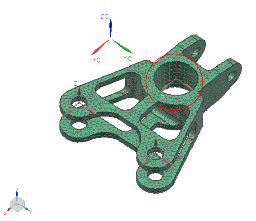

节点坐标系
-
节点位移坐标系为结构自由度提供节点参考系
定义节点位移限制时要使用位移坐标系。例如，如果想把一个节点限定在 X 自由度，则参照节点的位移坐标系中的 X 方向。
-
节点参考坐标系为节点坐标(栅格位置)提供节点参考系
为某个节点集指派节点参考坐标系后，可根据绝对坐标系重定位或重定向参考坐标系，从而轻松移动这些节点(及其附加单元)。这在处理附加网格等情况时十分有用。
使用指派节点坐标系  命令将位移或参考坐标系指派到节点。
命令将位移或参考坐标系指派到节点。
|

|